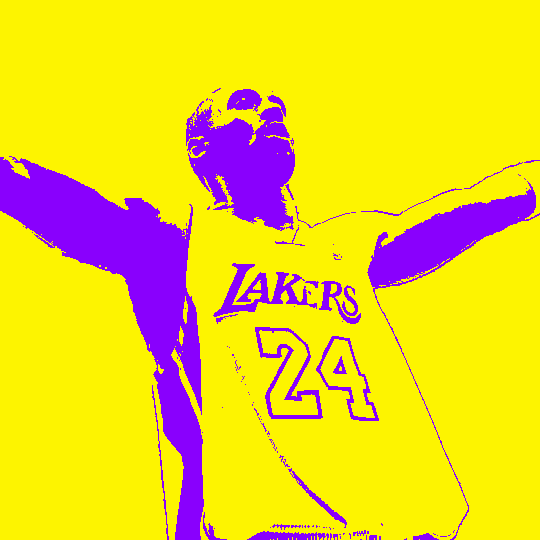
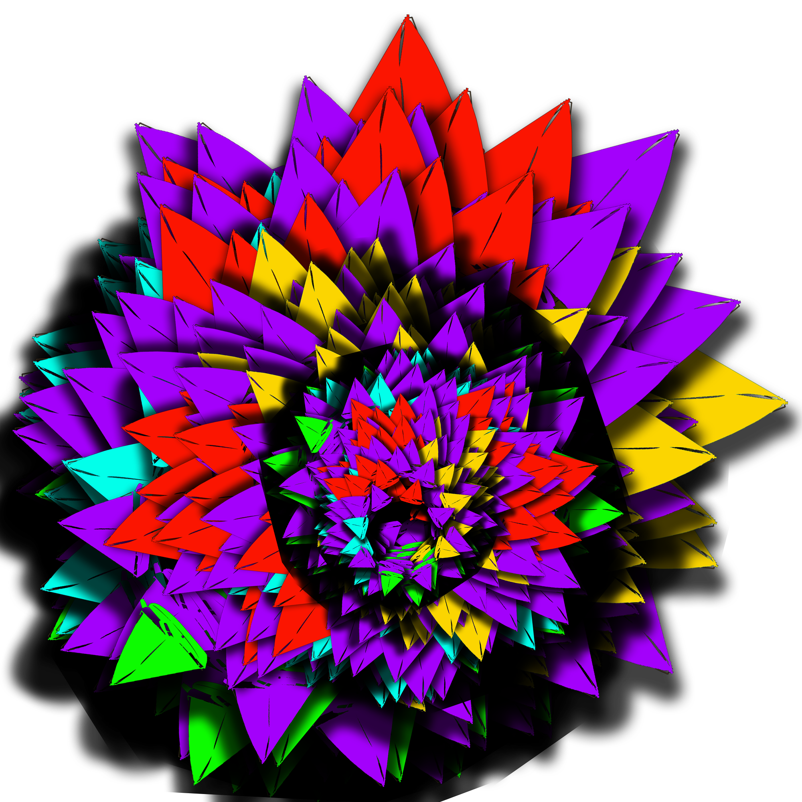

Hi this is Oliver's Page !
This is the Visual Design Page
Home Page
Digital Design
Visual Design
WCP
About Me
Project 1

For this project the software used was Photoshop. In order to create the picture like how I did, I had to use many different tactics. My original photo looks like a whole different image compared to the finished result.
Project 2

The celebrity that I chose for this project is Kobe Bryant. Kobe Bryant was a professional basketball player. I chose this person because he’s been a part of many peoples lives. The tools I used to complete this portrait were, eyedropper - to get an almost identical color to color in the portrait, and pencil - to color in the portrait.
Project 3

I made this project by using different tools in Photoshop such as, rotating, scaling, and filling in colors. Adding on, I used a boat as my base shape, and the colors I included were red, purple, yellow, green, and cyan. I noticed the shape turns into something more than a shape like an illusion. This was an interesting task to complete because of the result that came at the end of it.
Project 4